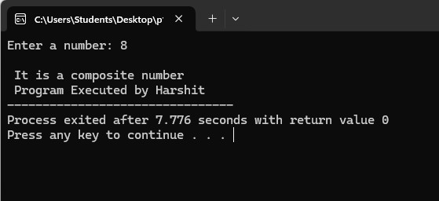
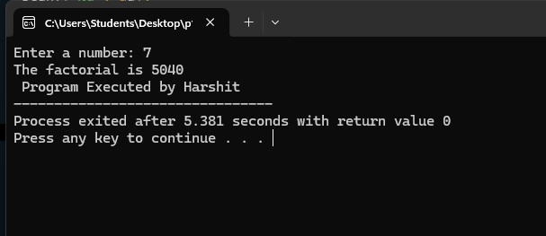
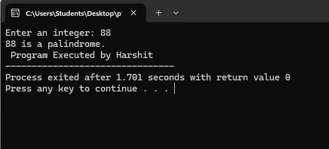
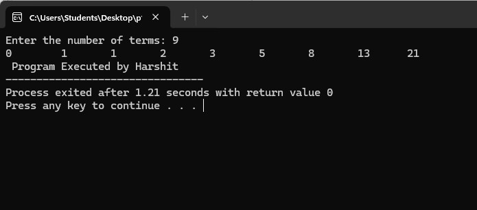
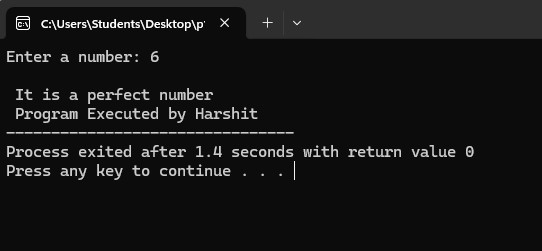
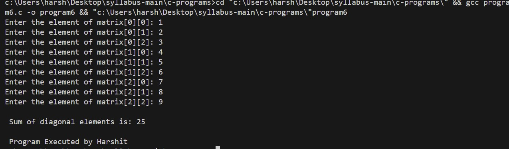
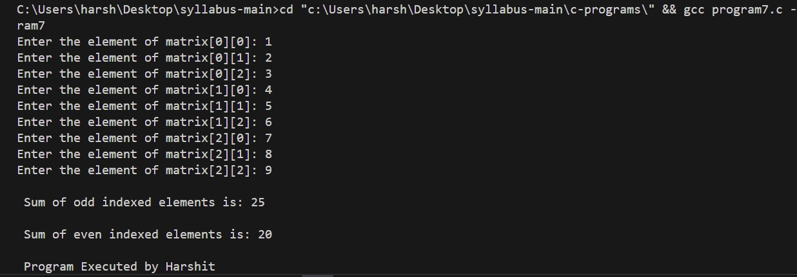

Chapter 5: Programming Concepts and Logic
Computer Program
In computing, a program is a specific set of ordered operations for a computer to perform. In the modern computer that John von Neumann outlined in 1945, the program contains a one-at-a-time sequence of instructions that the computer follows. Typically, the program is put into a storage area accessible to the computer.
Programming Language
A programming language is a set of instructions used to communicate with a computer to perform tasks. It consists of keywords, variables, operators, loops, and other elements, using numbers, special symbols, and alphanumeric values. The process of writing code is known as programming, and the person who writes programs is called a programmer.
Types of Programming Languages
Low-Level Language: Machine-dependent and harder to use,
requiring detailed system knowledge.
Machine Level Language (1GL): Uses binary (0's and 1's)
understood by the processor, offering high execution speed but
difficult to write and debug.
Assembly Language (2GL): Uses mnemonics (e.g., ADD, SUB)
instead of binary but still requires knowledge of system architecture.
It’s faster than high-level languages but more complex to write and
debug.
High-Level Language (HLL): Closer to human languages (like
English), machine-independent, and easier to write and debug. Requires
a compiler or interpreter to convert to machine code.
Examples: C, C++, Python, JavaScript.
Advantages: Easier to write, debug, and understand.
Machine-independent. Faster development.
Disadvantages: Slower execution than low-level languages.
Classifications of High-Level Languages
Procedural Oriented Language (3GL): Focuses on procedure and
logic. Examples: C, FORTRAN, QBasic. It’s easier to debug but slower
in execution and offers less data security.
Object-Oriented Language (4GL): Focuses on data rather than
procedure, with features like encapsulation, inheritance, and
security. Examples: C#, Java, C++. It’s more user-friendly but slower
than 3GL.
Natural Language (5GL): Uses normal communication language,
still in development. Example: PROLOG. Easier to debug, but execution
is slow and difficult for hardware-specific tasks.
Language Translator/Processor: Converts programs from
high-level or assembly language into machine-readable code.
Assembler: Converts assembly language into machine code.
Compiler: Translates an entire high-level program into machine
code at once (e.g., C, C++).
Interpreter: Translates a high-level program one statement at a
time, making debugging easier but slower in execution (e.g., BASIC,
PHP).
Programming Logic
Programming logic is the process of developing and implementing sequences of operations to solve a problem. It involves defining the steps and conditions required to perform a task and produce the desired output.
Key concepts of programming logic:
- Sequence: Executing instructions in a specific order.
- Selection: Making decisions based on conditions.
- Iteration: Repeating a set of instructions until a condition is met.
Programming logic helps programmers design efficient algorithms and implement them using programming languages.
Iterative Control Structure
An iterative control structure allows a set of instructions to be repeated until a specific condition is met. It involves loops that execute a block of code multiple times based on the loop condition.
Types of loops:
-
For Loop: Executes a block of code a specified
number of times.
Syntax:for (initialization; condition; increment/decrement) { code block; }Example:#includeint main() { int i; for (i = 1; i <= 5; i++) { printf("%d\n", i); } return 0; } -
While Loop: Executes a block of code as long as a
condition is true.
Syntax:while (condition) { code block; }Example:#includeint main() { int i = 1; while (i <= 5) { printf("%d\n", i); i++; } return 0; } -
Do-While Loop: Executes a block of code at least
once and then repeats as long as a condition is true.
Syntax:do { code block; } while (condition);Example:#includeint main() { int i = 1; do { printf("%d\n", i); i++; } while (i <= 5); return 0; }
Array in C-Programming
An array is a collection of elements of the same data type stored in
contiguous memory locations. It allows storing multiple values under a
single name and accessing them using an index.
Syntax:
data_type array_name[array_size];
Types of Array:
-
One-Dimensional Array: Stores elements in a single
row or column.
Example:#includeint main() { int arr[5] = {1, 2, 3, 4, 5}; int i; for (i = 0; i < 5; i++) { printf("%d\n", arr[i]); } return 0; } -
Two-Dimensional Array: Stores elements in rows and
columns (matrix).
Example:#includeint main() { int arr[2][3] = {{1, 2, 3}, {4, 5, 6}}; int i, j; for (i = 0; i < 2; i++) { for (j = 0; j < 3; j++) { printf("%d\t", arr[i][j]); } printf("\n"); } return 0; }
String array
A string array is an array of strings, where each element of the array is a string. It is used to store multiple strings in a single variable, making it easier to manage and manipulate collections of text data.
Syntax:
char array_name[row_size][column_size];
Example:
#include
int main()
{
char names[3][10] = {"Alice", "Bob", "Charlie"};
int i;
for (i = 0; i < 3; i++)
{
printf("%s\n", names[i]);
}
return 0;
}
Sample C-Programs
1. Program to find if the input number is prime number or composite
Code:
#include
int main()
{
int a, i, t=0;
printf("Enter a number: ");
scanf("%d", &a);
for ( i = 2; i < a; i++)
{
if (a%i==0)
{
t=1;
}
}
if (t=0)
{
printf("\n It is a prime number");
}
else{
printf("\n It is a composite number");
}
printf("\n Program Executed by Harshit");
return 0;
}
Output:

2. Program to find the factorial of input number
Code:
#include
int main()
{
int a, i, ans=1;
printf("Enter a number: ");
scanf("%d", &a);
for ( i = 1; i <= a; i++)
{
ans *= i;
}
printf("The factorial is %d", ans);
printf("\n Program Executed by Harshit");
return 0;
}
Output:

3. Program to find if the input number is palindrome or not
Code:
#include
int main() {
int i, b = 0, r, a;
printf("Enter an integer: ");
scanf("%d", &i);
a = i;
while (i != 0) {
r = i % 10;
b = b * 10 + r;
i /= 10;
}
if (a == b)
{
printf("%d is a palindrome.", a);}
else
{printf("%d is not a palindrome.", a);}
printf("\n Program Executed by Harshit");
return 0;
}
Output:

4. Program to display the fibonacci sequence
Code:
#include
int main()
{
int i, n;
int a = 0, b = 1;
int c = a + b;
printf("Enter the number of terms: ");
scanf("%d", &n);
printf("%d\t %d\t ", a, b);
for (i = 3; i <= n; ++i) {
printf("%d\t ", c);
a = b;
b = c;
c = a + b;
}
printf("\n Program Executed by Harshit");
return 0;
}
Output:

5. Program to find if the input number is perfect number or not
Code:
#include
int main()
{
int a, i, t=0;
printf("Enter a number: ");
scanf("%d", &a);
for ( i = 1; i < a; i++)
{
if (a%i==0)
{
t+=i;
}
}
if (t==a)
{
printf("\n It is a perfect number");
}
else{
printf("\n It is not a perfect number");
}
printf("\n Program Executed by Harshit");
return 0;
}
Output:

6. Program to find the sum of diagonal elements of input 3X3 matrix
Code:
#include
int main()
{
int matrix[3][3], i, j, sum = 0;
for (i = 0; i < 3; i++)
{
for (j = 0; j < 3; j++)
{
printf("Enter the element of matrix[%d][%d]: ", i, j);
scanf("%d", &matrix[i][j]);
if (i == j || i + j == 2)
{
sum += matrix[i][j];
}
}
}
printf("\n Sum of diagonal elements is: %d\n", sum);
printf("\n Program Executed by Harshit");
return 0;
}
Output:

7. Program to display the sum of odd and then even elements of a 3X3 matrix
Code:
#include
int main()
{
int matrix[3][3], i, j, sumodd = 0, sumeven = 0;
for (i = 0; i < 3; i++)
{
for (j = 0; j < 3; j++)
{
printf("Enter the element of matrix[%d][%d]: ", i, j);
scanf("%d", &matrix[i][j]);
if (i == j || i + j == 2)
{
sumodd += matrix[i][j];
}
else
{
sumeven += matrix[i][j];
}
}
}
printf("\n Sum of odd indexed elements is: %d\n", sumodd);
printf("\n Sum of even indexed elements is: %d\n", sumeven);
printf("\n Program Executed by Harshit");
return 0;
}
Output:

Questions and Answers
1. What is Programming?
Programming is the process of writing instructions (code) that a computer can execute to perform specific tasks. It involves problem-solving, logic, and algorithm development to create software applications.
Programming is done using different languages such as:
- Python: Easy to learn and widely used for data science, web development, and automation.
- C++: Used for system programming, game development, and competitive coding.
- Java: Used for mobile applications (Android), enterprise applications, and backend development.
- JavaScript: Primarily used for web development and interactive websites.
Programming requires logical thinking, problem-solving skills, and an understanding of syntax and semantics.
2. What is an Algorithm?
An algorithm is a step-by-step procedure or set of rules for solving a problem in a finite number of steps. It is used in programming to define logic before writing actual code.
Characteristics of a good algorithm:
- Definiteness: Each step must be clear and unambiguous.
- Finiteness: It must have a finite number of steps.
- Effectiveness: Each step should be simple and executable.
- Input & Output: It should take input and produce an output.
Example Algorithm: Finding the sum of two numbers
Step 1: Start
Step 2: Input two numbers (A, B)
Step 3: Sum = A + B
Step 4: Display Sum
Step 5: Stop
3. What is a Flowchart?
A flowchart is a graphical representation of an algorithm using symbols to illustrate steps and decision-making in a program.
Common flowchart symbols:
- Oval: Start/End
- Parallelogram: Input/Output
- Rectangle: Process (Calculation or Action)
- Diamond: Decision (Yes/No or True/False)
- Arrow: Flow of execution
Flowcharts help programmers visualize logic before coding, making debugging easier.
4. What are Variables and Data Types?
A variable is a named storage location in memory used to hold data. The value of a variable can change during program execution.
Data types define the type of data that a variable can hold. Common data types include:
- Integer (int): Holds whole numbers (e.g., 5, -10).
- Float (float/double): Holds decimal numbers (e.g., 3.14, -2.5).
- Character (char): Holds a single character (e.g., 'A', '5').
- String: Holds a sequence of characters (e.g., "Hello").
- Boolean (bool): Holds True or False values.
Example in Python:
# User information
username = "JohnDoe" # String
score = 4500 # Integer
completion_rate = 87.5 # Float
is_admin = False # Boolean